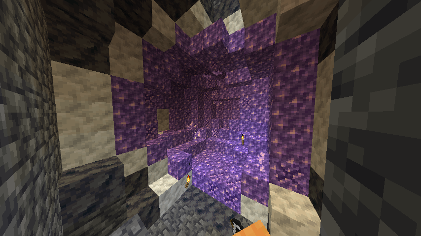
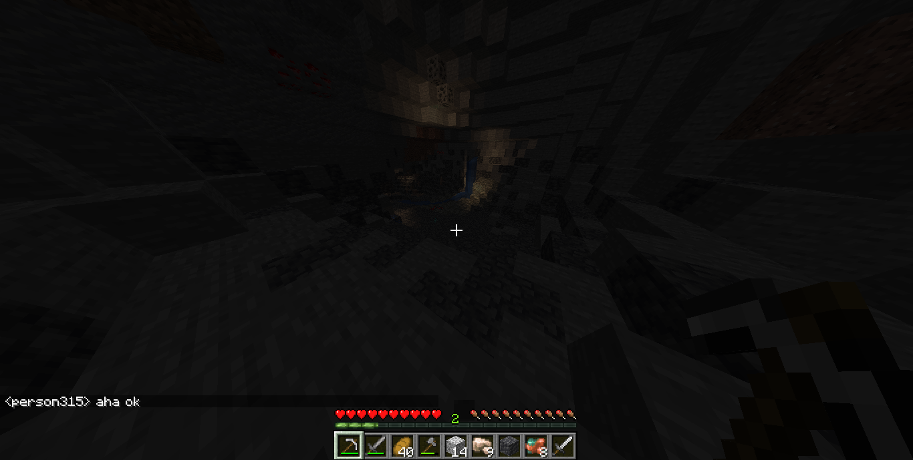

I am a high school student from Serbia interested in FOS software and a longtime user of Linux, I am interested in web design and development and I hope that one day I will be able to work as a web designer or programmer, I like learning java and playing games in my free time. My favorite video game is Minecraft and that's why I decided to open a small SMP server.
The goal of this server is just to have fun and chill, I don't want money but quality gameplay, I accept donations, but only if you want to donate, this server is not ptw (pay to win), so everyone is equal, This server always uses the latest version minecraft, assuring that you will always have the best possible experience, we try to be as family as possible, so if you are interested in fun then this server is for you, No matter where you come from or your nationality, you are all welcome.
